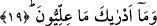
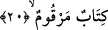
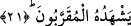

yükseltilmiş olmasından dolayıdır.
Rivâyete göre melekler kulun amelini alarak semaya yükselirler. Allah Teâlâ’nın
kendi saltanatında dilemiş olduğu noktaya vardıklarında Cenab-ı Hak onlara: “Sizler
benim kulumun hafaza meleklerisiniz. Ben de onun kalbinde olanı gözetleyenim. Kulum
amelinde ihlaslı olmuştur, onun amelini İlliyyûn’a koyun. Ben onu bağışladım” buyurur.
Bu melekler, kulun ameliyle göğe yükseldiklerinde o kulu tezkiye eder, temize çıkarırlar.
Onlar Allah’ın dilediği noktaya ulaştıklarında onlara şöyle buyurur: “Sizler benim
kuluma muhafız meleklersiniz. Bense onun kalbini gözetleyenim. Bu kulum amelinde
ihlaslı davranmamıştır onun amelini Siccîn’e koyunuz” buyurur.[51] Bu hadiste hafaza
meleklerinin -Allah’ın bildirmesi olmadıkça- ihlas ve riya gibi şeyleri
bilemeyeceklerine işâret vardır.
19. İlliyyûn nedir, bilir misin?
Yani illiyyûn, insanlığın kavrama sınırlarının dışındadır.
20. (O İlliyyûn’daki kitap,) içinde ameller kaydedilmiş bir kitaptır.
“O yazılmış bir kitaptır.” Bir başka ifâdeyle o yazısı gâyet net, külfetsiz okunan ve
satırlara yazılmış bir kitaptır. Veya bir takım alâmetlerle işâretlenmiş bir kitaptır. Bu
alâmetler o kitabın sâhibinin saîd olacağına ve sürekli nimeti, sonu gelmez saltanatı
elde ettiğine işâret etmektedir. İlliyyûn kelimesi çoğuldan nakledilmiş bir özel isim
olduğundan, tekil bir kelime olduğuna hükmedilmiştir. Bundan dolayı yine âyet içinde
onun hakkında tekil bir kelimeyle; “kitabun merkum/yazılmış bir kitap” ifâdesi
kullanılmıştır. Ancak kelime hakkında böyle hüküm verilirken, i’rab açısından o çoğul
kelime gibi i’rab edilmiştir. Yani önce fî harf-i cerri ile mecrur kılınmış, sonra istifham
mâ’sının haberi olarak merfû yapılmıştır. Bazı âlimlere göre illiyyûn kelimesi, çoğul
lafzında olan müfred bir isimdir. Tıpkı yirmi anlamına gelen “işrûn” ve benzeri
kelimeler gibi. Nitekim örnek verdiğimiz bu kelimelerin de tekilleri yoktur.
21. O kitabı, Allah’a yakın olanlar görür.